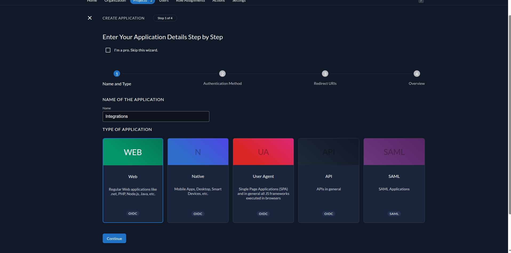
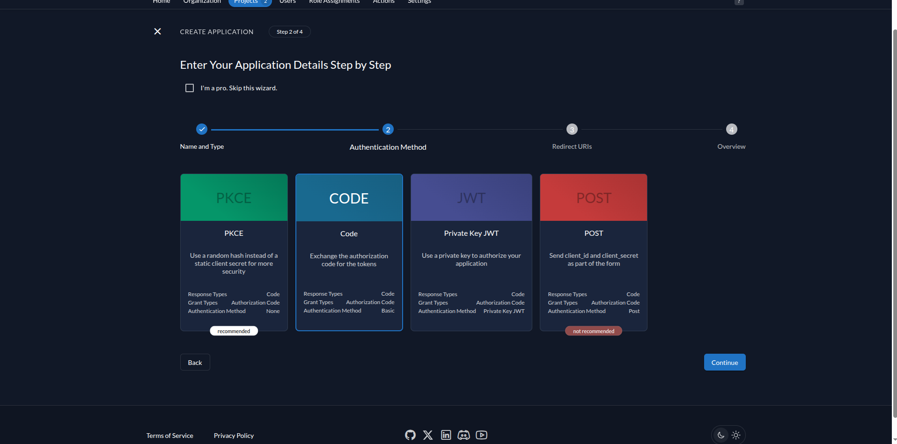
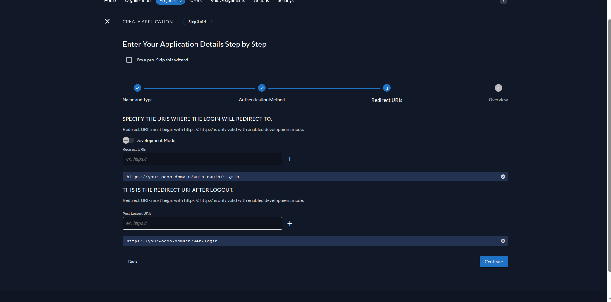
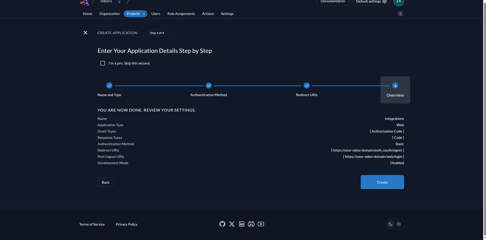
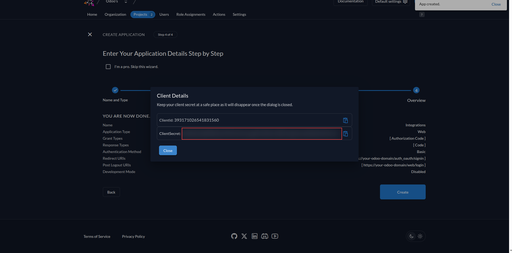
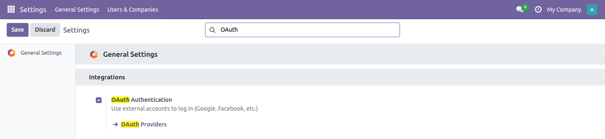
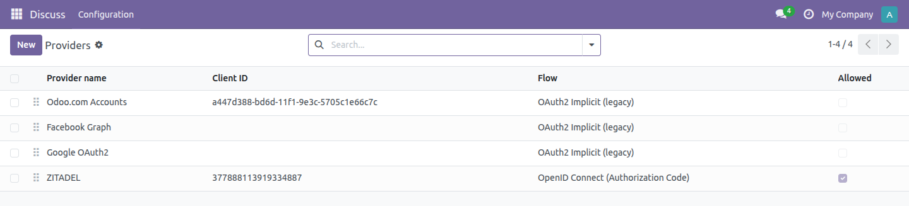
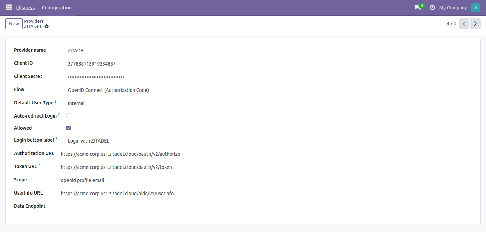
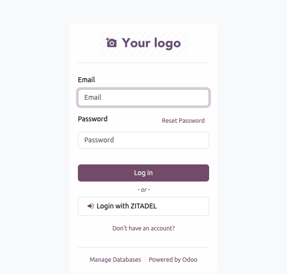

Log in to Odoo with ZITADEL, Keycloak, Auth0, Okta or Entra ID — using the Authorization Code flow that Odoo's own OAuth module cannot do.
Odoo's built-in auth_oauth only implements the OAuth2 implicit flow.
It builds response_type=token links and waits for an access token in the URL fragment.
That flow was deprecated by OAuth 2.1 and is refused outright by ZITADEL, Keycloak,
Auth0, Okta and Entra ID. This module adds the Authorization Code flow they all require.
Single sign-on that works on day one, and keeps working.
|
🔒
Authorization Code FlowThe code is exchanged for a token server-side, over a direct back-channel call. No token ever touches the browser. |
🔄
Nothing Else ChangesFlow is chosen per provider. Anything you already configured on the legacy flow keeps working, untouched, in the same database. |
✅
First Login That WorksOdoo copies a template user that is often unset or archived — and then every first login fails with no useful error. This creates the account directly instead. |
|
👤
Portal Or InternalDecide what new users become, per provider. Existing users keep their groups — a demotion is never undone by the next login. |
🔃
Profile SyncName and email are refreshed from the provider on every login, so your directory stays the source of truth. |
🚪
Auto-Redirect, Safely
Send |
|
🔑
Secret Kept SecretThe client secret is a Settings-only field, not just a masked input. It never reaches the browser and is not readable over RPC by anyone else. |
🌐
Not Vendor Locked
The token exchange is a plain RFC 6749 request. Point it at any provider's
|
🧪
19 Automated TestsToken exchange, failure paths, secret visibility and user provisioning are all covered and green on a fresh database. |
Ten steps, about fifteen minutes. Six on the provider side, four in Odoo.
Create the application, and collect the five values Odoo needs.
|
 |
STEP 1
Create A Web ApplicationIn your project, open Applications → New, give it a name and choose WEB. Not User Agent and not Native — those are public clients with no secret, and this module needs a confidential one. |
|
STEP 2
Choose Code, Not PKCEPick CODE, which sets Authentication Method to Basic. ZITADEL marks PKCE as recommended, but PKCE means Authentication Method None — no client secret is ever issued, and this module cannot use it. This is the step people get wrong. |
 |
|
 |
STEP 3
Add The Redirect URIs
Redirect URI
Post Logout URI Click the + after each one — typing alone does not add it. Leave Development Mode off unless you are on plain http. |
Odoo builds that address from the web.base.url system parameter. If it still
says localhost:8069 while ZITADEL expects your public domain, the login is
rejected with nothing more helpful than invalid redirect. Character for character,
scheme included — this is the single most common cause of a failed OIDC setup.
|
 |
STEP 4
Review And CreateThe summary should read Web, grant type Authorization Code, response type Code and authentication method Basic. If any of those differ, go back — the module expects exactly this combination. |
|
STEP 5
Copy The Client Secret NowZITADEL shows the Client ID and Client Secret once, in this dialog. Copy the secret before closing it. Once the dialog is gone the only way back is to regenerate a new secret, which invalidates the old one. |
 |
ZITADEL does not hand these to you — the dialog in step 5 gives only the Client ID and Secret. The three URLs come from your instance domain, the one in your browser's address bar while you are in the console.
Not sure, or using another provider? Open
https://YOUR-INSTANCE.zitadel.cloud/.well-known/openid-configuration in a
browser. Every OIDC provider publishes that document, and it lists
authorization_endpoint, token_endpoint and
userinfo_endpoint verbatim. Copy them across and the module works with any
of them.
Four screens, and the button appears on your login page.
|
 |
STEP 7
Turn On OAuthSettings → General Settings → Integrations, tick OAuth Authentication. Without it no provider button renders, however well the rest is configured. |
|
STEP 8
Open The Providers ListWith developer mode on, go to Settings → Users & Companies → OAuth Providers. The module adds a Flow column so you can see which providers are legacy and which are OpenID Connect. A disabled ZITADEL record is already there, waiting to be filled in. |
 |
|
 |
STEP 9
Enter The CredentialsSet Flow to OpenID Connect (Authorization Code), then fill in the Client ID and Secret from step 5 and the three URLs from step 6:
|
|
STEP 10
Sign InTick Allowed, save, and log out. Your provider's button is now on the login page. The first person to use it gets an Odoo account created automatically, as Portal or Internal, exactly as you configured. |
 |
Three screens, and the user never types an Odoo password. Odoo does not see their credentials at any point — only ZITADEL does. The screens below are a real sign-in against a live ZITADEL instance, not a mock-up.
Anyone with an account in your ZITADEL instance. They do not need an Odoo account first — that is the point: the first successful sign-in creates one. Add people under Users → New in the ZITADEL console, or let them register if you have left self-registration on. Nobody outside your directory can get in, because Odoo never checks a password of its own.
|
1
Click The ButtonOdoo sends the user to your provider with |
2
Provider AuthenticatesThe user signs in there, and is returned with a short-lived authorization code. |
3
Odoo Exchanges ItServer-side, with the client secret, Odoo swaps the code for an access token. |
4
User Is Signed InThe account is created or matched, groups applied, name and email synced. |
No PKCE. It is not required for a confidential client, which authenticates with its secret — but if your provider mandates PKCE, this module will not satisfy it. One auto-redirect provider at a time; the first enabled one wins. Tested against ZITADEL Cloud — Keycloak, Auth0, Okta and Entra ID expose the same endpoints and are expected to work, but are not covered by the test suite.
|
ODOO VERSION
20.0
|
LICENSE
LGPL-3
|
CATEGORY
Tools
|
DEPENDENCIES
auth_oauth
|
|
REQUIREMENTS
An OpenID Connect provider · a confidential (web) application with a client secret
· Odoo reachable over https ·
web.base.url set to your public address
|
SECURITY & DATA
Credentials stay in your own database · the secret is visible to Settings
administrators only · no external Python libraries · nothing passes through
the author's servers
|
Questions about installation, a provider we have not listed, or a custom requirement? Get in touch.
ZITADEL SSO — free and open source, LGPL-3, for Odoo 20.
shahzebvaxeer5616@gmail.com →